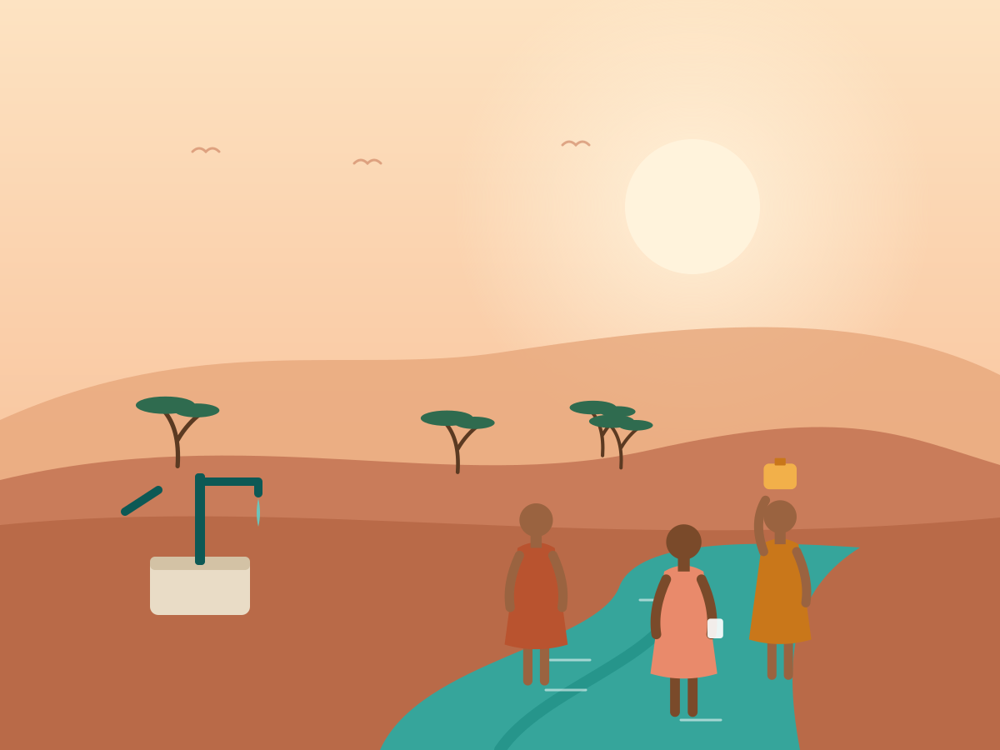
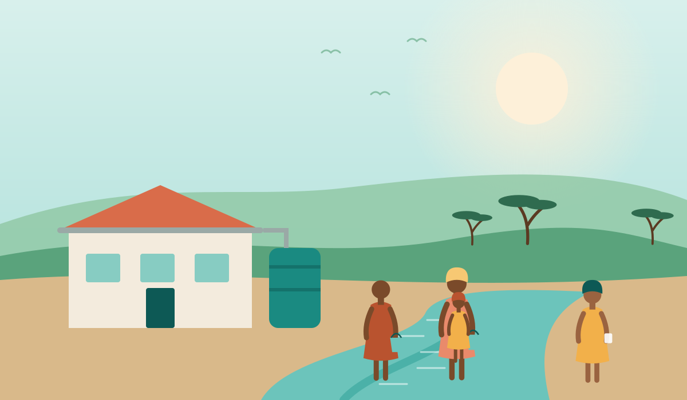

The well that brought Amina back to school
For six years, Amina walked four hours a day for water. A borehole in her village gave her those hours back.
Lokichar, KenyaSeptember 20267 min read

The walk starts before dawn. For six years, Amina left home at five in the morning with a yellow jerrycan, following a dry riverbed to the only reliable water source near Lokichar. By the time she got back, the school bell had long since rung.
"I was always late, or I didn't go at all," she remembers. "The teacher stopped asking where I was." Like millions of girls in rural East Africa, Amina's education was quietly traded for water. She was nine when she missed her first full term.
A village decides
In 2024 the village elders asked Clearwater Trust's Kenya partner for help. The request came with conditions of its own: the community would choose the site, form a water committee with at least half women members, and set a small monthly fee to pay for repairs.
Hydrogeologists surveyed three locations. The committee picked the one closest to the school. Drilling took eleven days. At 86 meters, the drill hit water.
“Now I walk to school, not to the river. I want to be an engineer and build wells like this one.”

Four hours, given back
The solar-powered borehole serves 2,300 people. Water flows from six taps, and a sensor reports usage every hour to the committee's phone and to our team in Nairobi. When a valve failed in March, a local mechanic fixed it the next morning.
Amina is now 13 and in grade seven. She hasn't missed a day this year. Her mother, Esther, uses the time she once spent walking to run a small vegetable garden, watered from the overflow.
"We used to think water was a problem for the government," Esther says. "Now we know it is ours. We keep it running."